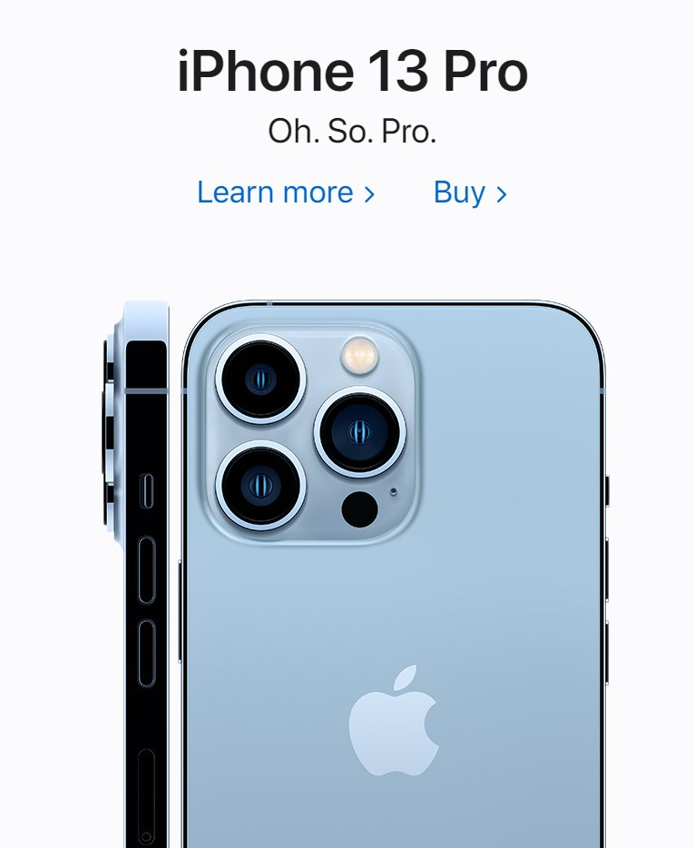
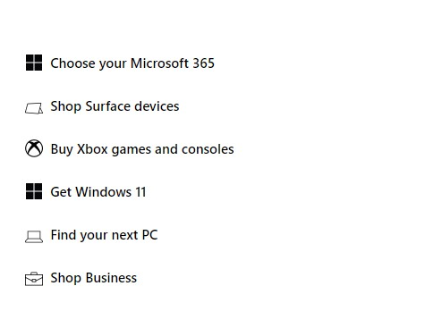

Contrast
Nike footwear manufacuting company
nike.comContrast is a visual design principle where you at least two different items next to each other that greatly are different from one another. At the bottom of the Nike mobile website you can see a heavy comparison between the background colors of white and black right next to each other.
Visual Hierarchy
Apple technology company
apple.com Visual Hierarchy is referring to the arranging of different elements to give each one a certain degree or level of importance. In this screenshot, we can see that the picture of the phone is very large to draw your attention their and the name is the next largest element for you to draw a quick connetion on the name of the phone.
White Space and Clean Design
Microsoft technology company
microsoft.com White space is the empty space that is left on a design between elements. It makes for a clearer image with less going on. You can see in this shot that they also keep it very clean with only taking a small amount of the screen with elements and the elements are simple designs without any extra added color.